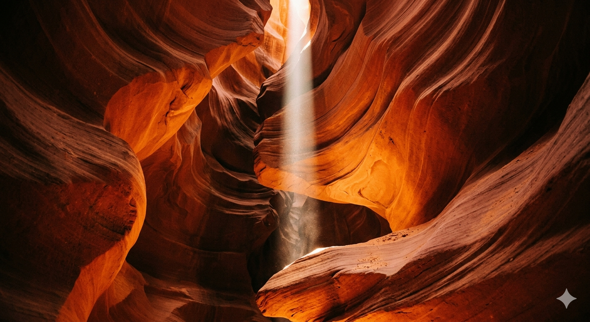
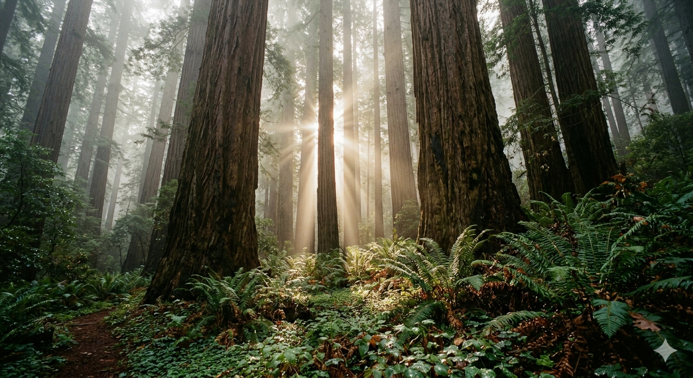
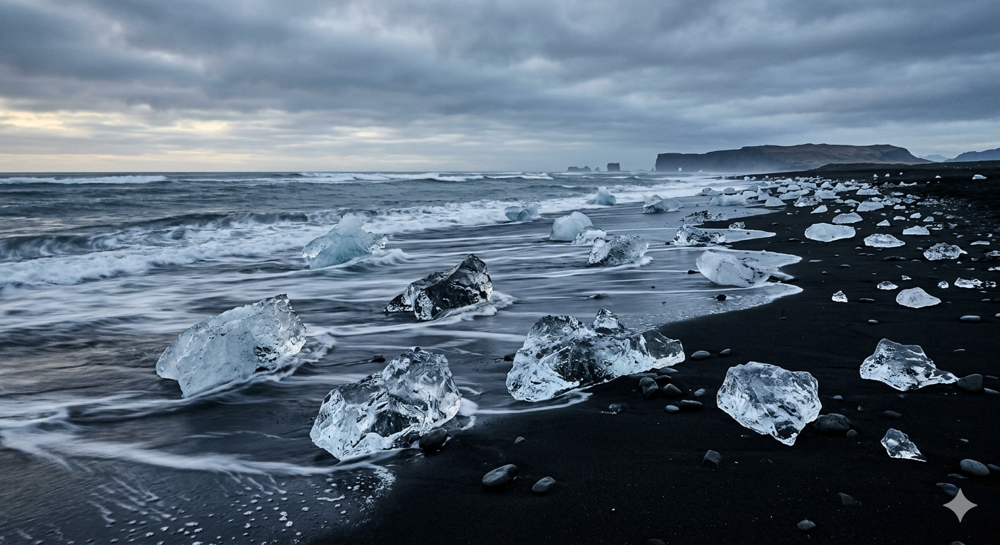
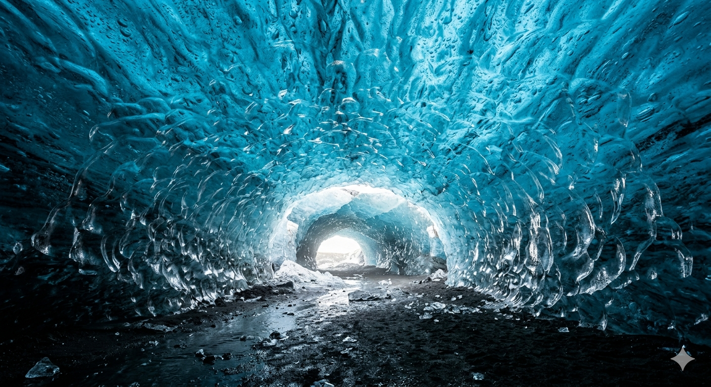
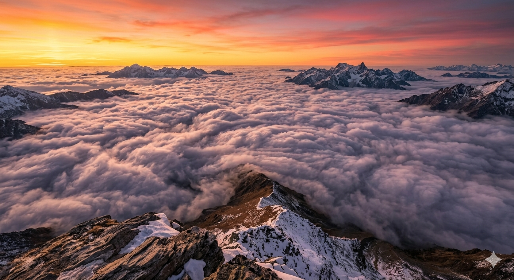
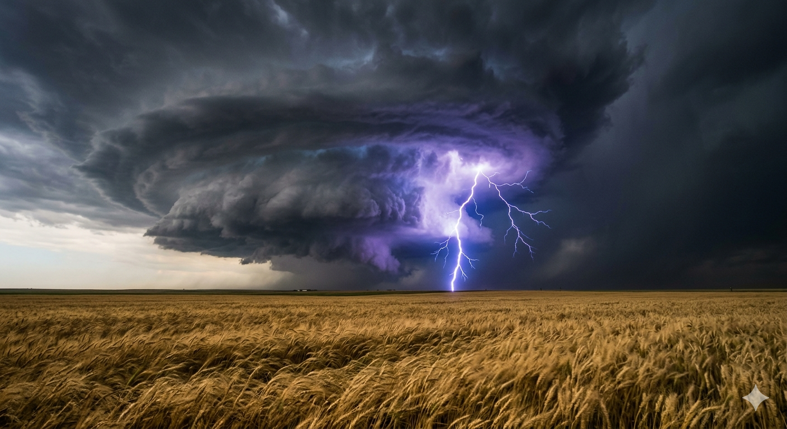
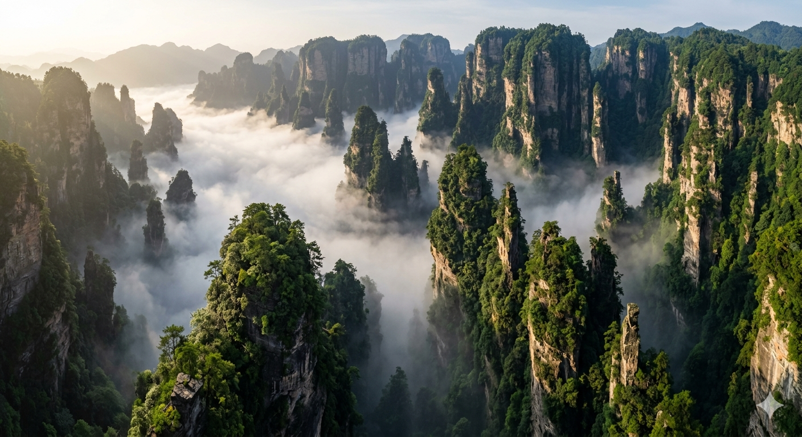
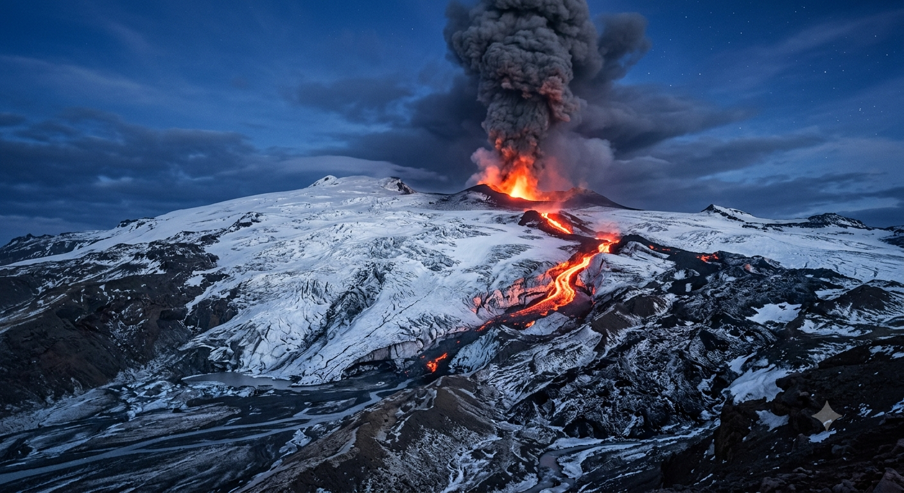
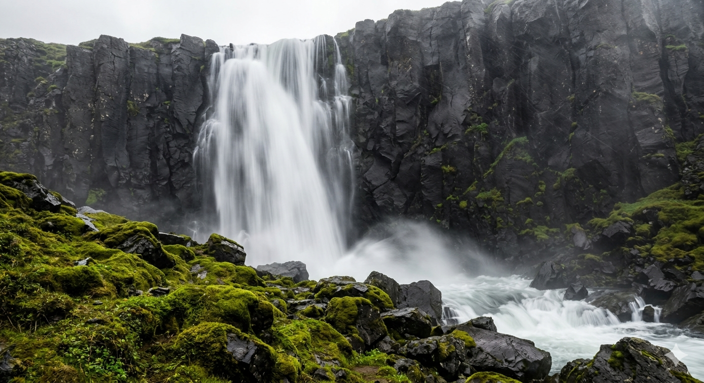

Un rayo de luz celestial en el abismo. Esta fotografía es un estudio de la erosión y el tiempo, mostrando cómo la luz del sol penetra las profundidades de un cañón de arenisca, pintando las paredes con tonos de naranja y cobre ardientes.

Donde los gigantes de la tierra se encuentran con el cielo. La luz del sol perfora la niebla matutina, transformando este antiguo bosque de secuoyas en un templo de luz y sombra, donde cada helecho y cada tronco cuentan una historia milenaria.

Donde los glaciares van a morir. En esta playa de arena volcánica negra, los fragmentos de hielo brillan como diamantes desechados por el mar, capturando la luz fría de un cielo nublado en un paisaje de austera belleza.

Viaja al corazón de un glaciar. Esta toma captura la luz etérea que se filtra a través de texturas de hielo azul eléctrico, un santuario helado donde el tiempo parece detenerse bajo un techo tallado por la naturaleza.

Al amanecer, el mundo se divide. Capturada desde una cumbre nevada, esta toma muestra un mar de nubes rosadas y púrpuras que cubren los valles, dejando solo los picos más altos como islas en un océano etéreo bajo un cielo de fuego.

El momento exacto del veredicto de la naturaleza. Sobre un campo de trigo dorado, una supercélula monstruosa desata su furia, capturando un solo rayo violeta que une el cielo y la tierra en un espectáculo de poder puro.

Pilares de piedra que emergen de la niebla. Esta imagen evoca un mundo de fantasía, donde antiguas formaciones rocosas cubiertas de vegetación flotan sobre un valle envuelto en bruma, una danza eterna entre la tierra y el aire.

La ira y la belleza de la creación. Al anochecer, esta toma captura el contraste dramático entre un pico nevado y el resplandor apocalíptico de un volcán en erupción, con ríos de lava roja tallando un camino a través del hielo.

Fuerza y fluidez en perfecta armonía. Esta imagen capta la caída incesante de agua blanca contra un acantilado de roca negra volcánica, todo enmarcado por el vibrante verde del musgo, un recordatorio del poder crudo de la tierra.